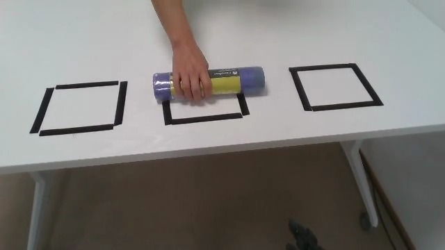
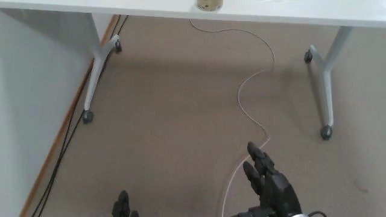
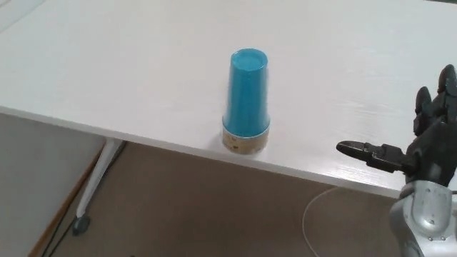
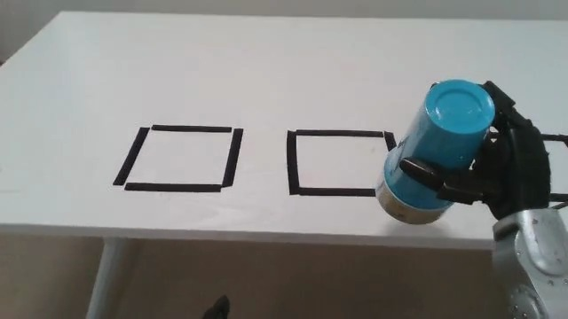
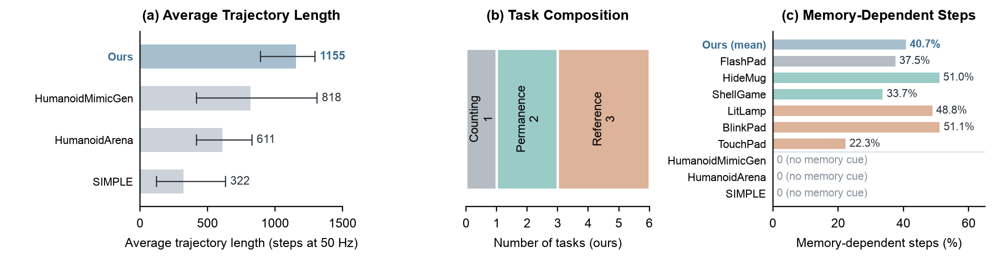

SITE.draft = false in static/js/data.js before release.Can a humanoid act on something it saw seconds ago and can no longer see? A person rests a bag on one of three frames and takes it away; the Unitree G1 turns away, picks up a cup, turns back and must remember where the bag was. Autonomous WholeBodyMem rollout, real time, faces blurred.
Supplementary video overview: why dynamic scenes need memory, how WholeBodyMem selects memory frames with object events, the memory-dependent benchmark, and results in simulation and on the real Unitree G1.
Figure 1. Architecture of WholeBodyMem.
Zero-shot SAM3 tracking on recorded G1 head-camera episodes. Left: each object's mask, named by its object; right: each object's memory state (tracked, last seen, never seen). Videos play at 2×; click one to pause it.
WhereTrash bag. Prompts “roll”, “blue cup”, “black tape square”. The roll is held over the middle square, then taken away.
WhatRemember-chip. Red, yellow and green chip cans and the cart, tracked while the robot picks the can that was singled out.
WhenCafé: first come, first served. Prompts “pepsi can”, “black tape square”. The cola stops on all three seats in turn; the robot serves the seat it stopped on first.
What + whereCafé: which seat has the cola. Prompts “pepsi can”, “green can”, “black tape square”. The cola and the sprite stop on different seats; the robot serves the cola’s seat.
What + where + whenCafé: where did the cola stop first. Same prompts. The cola stops on two seats and the sprite on one; the robot serves the cola’s first stop.
ProgressChip-cart. Prompt “chips can”; each can stays in memory (last seen) while it is out of view.




Figure 2. A real trash-bag episode from the G1's head camera (teleoperated demonstration, 30 fps).
The bag is in view only around t = 2 s; at the decision (t = 18.3 s) all three frames are empty. With seven frames each, WholeBodyMem keeps the bag's last appearance (t = 2.5 s), while Uniform memory steps over it.
In this BlinkPad demonstration, one of three pads blinks yellow for 0.2 s (10 frames at 50 Hz). Three seconds later the robot must place the can on that pad.
Uniform memory · 7 evenly spaced frames in [0, t]
WholeBodyMem · first, middle and current frames + up to four event frames (3 to 7 frames)
Figure 3. Which frames each memory keeps, with a budget of at most seven frames. Uniform memory always fills all seven, evenly spaced in time, and easily misses a short cue such as the 0.2 s blink; WholeBodyMem keeps the first, middle and current frames and adds up to four frames where an object appears or disappears, leaving the other slots empty, so it holds 3 to 7 frames and the blink is still in memory at the decision. In this demonstration the blink is detected from the pad's colour; WholeBodyMem detects it for the decision.
Six simulated humanoid loco-manipulation tasks in which the correct action depends on a cue that has already disappeared and is not named in the instruction. They cover three memory types: counting, permanence and reference.
Scripted expert demonstrations at level L0, played at 2× (click to pause). Task details are at the end of the page.
CountingFlashPad. Count the lamp's flashes, then place the soup can on the pad with that number.
PermanenceHideMug. Watch where the mug hides, then place the snack box in front of that screen.
PermanenceShellGame. Follow the cup that hides the ball, then place the chips can at its final slot.
ReferenceLitLamp. Watch which lamp lights up, then place the sugar box on the pad of that colour.
ReferenceBlinkPad. Hold the chips can, watch which pad blinks for 0.2 s, then place the can on it.
ReferenceTouchPad. One pad blinks once; after turning away, touch the pad that blinked with the right hand.
Closed-loop rollouts from the robot's head camera, recorded by the SIMPLE evaluation client at three randomization levels: L0 (visual and distractor), L1 (plus lighting) and L2 (plus spatial perturbation).
Each row runs the same held-out test scene with WholeBodyMem, Uniform memory and Ψ0, at L0, then L1, then L2.
The deployed policy runs on one RTX 5090; SAM3 tracks one frame per executed action chunk (about 1.25 Hz) and SONIC executes the predicted motion at 50 Hz.
WholeBodyMem controls the whole body; nobody touches the robot after the cue. Side view, real time, faces blurred.
WhereTrash bag. Put the cup on the frame where the bag rested.
WhatRemember-chip. Put the can the person singled out into the cart, then push the cart.
WhenCafé: first come, first served. Serve the cola to the seat that was served first.
What + whereCafé: which seat has the cola. A cola and a sprite rest on different seats; serve the cola to the cola's seat.
What + where + whenCafé: where did the cola stop first. Serve the cola to the seat of the cola's first stop.
ProgressChip-cart. Put the three cans into the cart one by one, then push the cart.
Training data is collected by whole-body teleoperation: the operator wears a PICO 4 Ultra headset, holds two controllers and wears ankle trackers; SONIC turns the tracked poses into motion for all 29 joints at 50 Hz. Both policies are fine-tuned on the same teleoperated demonstrations of each task.
Easy · whereTrash bag. The bag rests on one of three frames; the robot fetches the cup and places it there.
Easy · whatRemember-chip. A person singles out one of three chip cans; the robot puts that can into the cart and pushes it.
Easy · whenCafé: first come, first served. A cola visits every seat; serve the seat visited first.
Middle · what + whereCafé: which seat has the cola. A cola and a sprite rest on different seats; serve the cola's seat.
Hard · what + where + whenCafé: where did the cola stop first. Serve the seat of the cola's first stop.
Easy · progressChip-cart. Put three cans into the cart one by one, then push it.
Figure 4. Memory-decision accuracy, independent of manipulation. Dashed line: chance.
Table 1. Successes at L0 / L1 / L2 (30 episodes each); Avg.: success rate over all levels.
Table 2. Successes out of 30 per task (10 per level). Bold: best per task; underlined: second best. All columns are our evaluation with the same client; Ψ0: our fine-tuned checkpoint.
The six simulated memory-dependent tasks and the six real-world tasks.
| Task Name | Memory Type | Avg. #Steps | Memory-Dep. Steps | Cue | Brief Description |
|---|---|---|---|---|---|
| Task Suite: Counting (Temporal) | |||||
| FlashPad | T | 1153 | 37.5% | lamp flashes, 3.5 s | Watch the lamp flash one, two or three times, then pick up the soup can and place it on the pad with that number, counting from the left. |
| Task Suite: Permanence (Spatial) | |||||
| HideMug | S | 1297 | 51.0% | mug hides, 2.2 s | Watch where the mug hides behind a screen, then place the snack box on the pad in front of that screen. |
| ShellGame | S | 1296 | 33.7% | cups swapped, 3.6 s | Watch which of three cups hides the ball as they are swapped, then place the chips can on the pad of that cup's final slot. |
| Task Suite: Reference (Object) | |||||
| LitLamp | O | 1091 | 48.8% | lamp lights, 0.5 s | Watch which lamp lights up, then place the sugar box on the pad with that lamp's colour. |
| BlinkPad | O | 892 | 51.1% | pad blinks, 0.2 s | Hold the chips can and watch which pad blinks, then place the can on that pad. |
| TouchPad | O | 1199 | 22.3% | pad blinks, 0.2 s | Watch the three pads; one blinks once. Turn away, then touch the pad that blinked with the right hand. |
| Task Suite: Real World (Unitree G1) | |||||
| Trash bag | where | – | – | bag on a frame | A purple bag rests on one of three frames and is taken away; the robot picks the blue cup, turns back and places it on that frame. (Easy) |
| Remember-chip | what | – | – | a can is singled out | A person singles out one of three chip cans; the robot puts that can into the cart and pushes the cart. (Easy) |
| Café: first come, first served | when | – | – | cola on each seat | A cola rests on each of three seats for 0.7 s in random order; the robot serves its cola to the seat served first. (Easy) |
| Café: which seat has the cola | what + where | – | – | cola and sprite | A cola and a sprite each rest on a different seat; the robot serves the seat where the cola rested. (Middle) |
| Café: where did the cola stop first | what + where + when | – | – | cola, sprite, cola | The cola rests on two seats and the sprite on one, in random order; the robot serves the seat of the cola's first stop. (Hard) |
| Chip-cart | progress | – | – | none | The robot puts three cans into the cart one by one, then pushes the cart; the remaining cans are behind it once it turns. |

Figure 5. Compared with humanoid imitation benchmarks on the same robot and control rate (Unitree G1, 50 Hz), our episodes are the longest on average (1,155 control steps against 818, 611 and 322 for HumanoidMimicGen, HumanoidArena and SIMPLE), and 40.7% of their control steps depend on a cue that has already ended.
@article{wholebodymem2026,
title = {Memory before Goal: Role of Pre-History Memory for
Humanoid Loco-Manipulation},
author = {Anonymous},
journal = {Under review},
year = {2026}
}